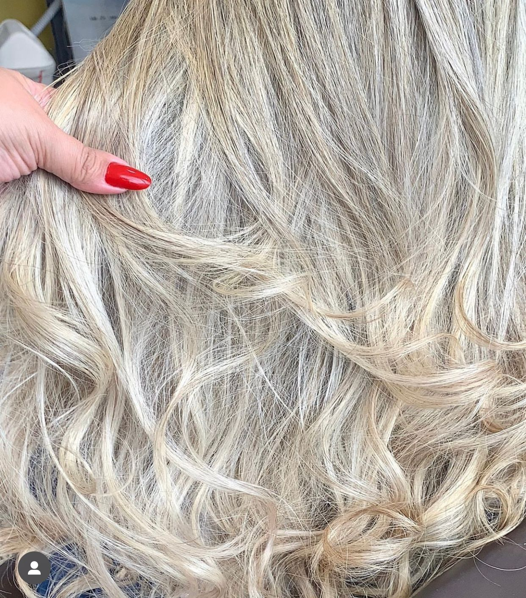

Serviços
Visagismo
Visagismo especializado em corte e cor, visagismo no cabelo é uma técnica de corte e coloração baseada na análise do formato do rosto. A idéia é encontrar o corte e a cor que melhor complementem o seu tipo de rosto, realçando os seus pontos fortes e minimizando as suas imperfeições.

Cortes Variados
Cortes variados com especialização em visagismo ,faz com que cada tipo de cabelo seja valorizado.

Mechas e Colorimetria
Especialização em mechas e colorimetria avançada, fazemos todos os tipos de cor e estilos.
